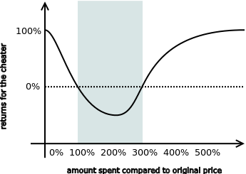

Yesterday, I've stumbled over an interesting article: Contracts Without Trust or Third Parties.
It proposes a way to create contracts in such a way that they don't have to be enforced by third parties (legal system, police, bank etc.) The primary example is selling things over internet. The contract should ensure that neither party cheats and decides not to deliver goods or money as agreed beforehand.
In short: I am selling you a book for $10. Each of us makes a deposit of $30, then we lock the deposit in such a way that none of us can unlock it on our own. I send you the book,you send me the money. When you get the book, you unlock the deposit. When I get the money I unlock the deposit. At that moment each of us gets their deposit back and the transaction is finished.
However, if I send you the book and you don't send me the money, I won't unlock the deposit and thus you'll end up with a book worth of 10$, the 10$ you've saved by not paying for the book and with unaccessible deposit of $30. All in all, you've lost $10. Thus, it makes economic sense for you to send me the 10$ you owe me so that I unlock the deposit and you get your $30 back.
(It should be noted that the author proposes the bitcoin blockchain to be used as a means to store the deposit. However, from the point of view of the following discussion, it is only a minor technical detail.)
The interesting part with this system is that it makes no sense from the perspective of traditional economics.
As you may know, economics is based on the abstraction called "homo economicus" (a.k.a. "rational idiot"), a selfish party trying to maximise its profits. Of course, no living person acts it exactly that way, but the assumption is that the model of homo economicus is a good enough approximation of what you are likely to experience in the real life.
Now, let's assume I am a homo economicus and let's revisit the scenario with the book.
I send you the book, you unlock the deposit (you have nothing to lose by doing that) but you won't send me the money. Now I am facing a dilemma: I can either keep the deposit locked — thus punishing you for not paying me for my book — or I can unlock the deposit to get the deposited money back. In the former case I lose the book and the deposit ($40), in the latter case I lose only the value of the book ($10). As a rational idiot I chose the latter option and you end up making profit from the theft.
As can be seen, if we all were homines economici, the described technique would not make any sense. In real life though, people are willing to lose money to punish a misbehaving individual (I am to lazy to look for the exect reference, but you should be able to find it in Matt Ridley's "The Origins of Virtue"). In our example, I would be willing to spend the $30 in the deposit to punish you for not playing fairly.
What we are seeing here is an economic model that goes beyond the concept of homo economicus. Even better, it's a quantifiable model.
Typically, economists would acknowledge that there are "non-rational" elements in human behaviour, such as personal tastes, different non-monetary externalities etc. However, the statement is as good as nothing, because it doesn't translate to something we can measure.
In this case though we can measure the "sense of justice", "spite", "rage" or however you choose to name it. You can take your test population and measure how much they are willing to spend to punish the cheater:
Then, you can quite trivially compute the returns for the cheater:

So, in this example it makes sense to set the deposit to 100%-300% of the original price (the grey rectangle), because in any other case the cheter turns in profit.
That much for the economic theory. Measuring these kind of metrics looks like a promising way to achieve novel scientific results in the area. Doing PhD in economics? You should consider pursuing this line of research.
As an addendum, I would like to suggest an improvement to the technique:
The "rage" tends to be a short-lived emotion. The cheater can unlock the deposit and forget about the transaction. After some time the victim would forget about the injustice and when faced with need for money he would unlock the deposit. At that point the cheater would turn out profit. To counter this scenario, the deposit should have a deadline after which it would not be possible to unlock it. Once again, measuring the time needed for the rage to wear down would be an interesting economic experiment.
Dec 1st, 2013